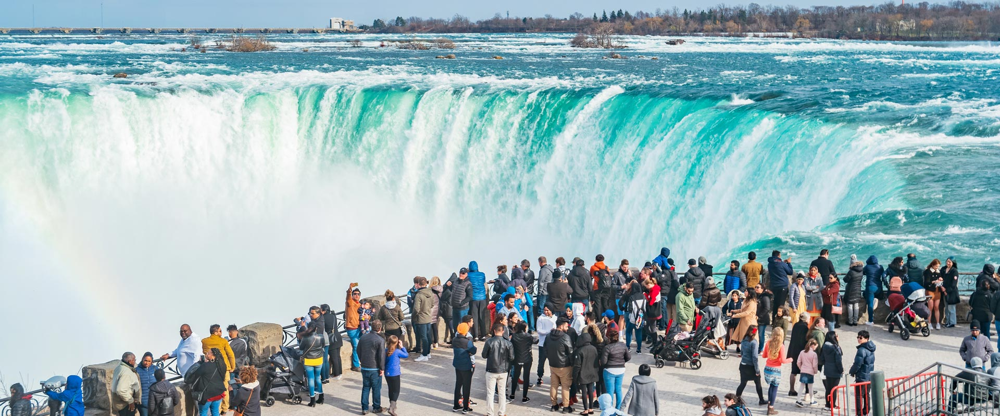
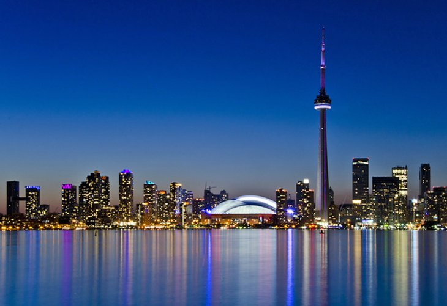

Find Yourself At Home
Join Now!
Hamiltion, Halton, Brant
Don't just hibernate this winter! Though the weather outside at times may be frightful don't let it stop you from getting out and exploring outdoors or the indoors if that's more your thing, and we’re just a short drive from much of southern Ontario. Hamilton Halton Brant is home to signature landscapes including the Niagara Escarpment, the Grand River, the Bruce Trail, Lake Ontario shorelines and a collection of more than 100 waterfalls, creating a beautiful backdrop for wintery fun. The area also boasts renowned heritage sites, attractions and museums, a vibrant arts scene, distinct downtowns and delectable dining. Here are just a few of our favourite winter day trip ideas.
Ottawa and Countryside
A relaxed urban vibe draped in natural splendour, Canada’s capital and Ontario’s second largest city is a showcase of national sites, museums, festivals and c ulinary experiences where visitors can experience the best of our country in one place. Ottawa's charming countryside offers vast greenery and an abundance of quaint shops.
Niagara Canada
Whether you’re looking for big and bold or quaint and quiet, you’ll find it in Niagara. In addition to the thundering Falls, you’ll discover exciting attractions, world-class casinos, over 125 wonderful wineries and fantastic farm-to-table cuisine, inspired theatre and live entertainment, as well as miles of cycling trails, the country’s largest collection of golf courses and sandy Great Lakes shorelines. Pair that with 12 months of festivals including the Winter Festival of Lights & Niagara Icewine Festival and special events for 365 days of getaway inspiration.
Southwest Ontario
We love seeing the look that spreads across visitors’ faces when they learn that the southern tip of our region dips onto the same latitudinal plain as northern California. The expression of disbelief quickly turns into a satisfied grin when they realize they’ve discovered a getaway destination that offers world-class freshwater beaches and water sports, some of the continent’s best birding, a rapidly evolving wine and culinary scene and the friendliest communities on the planet.
Great Toronto Area
Explore Canada's largest and most exciting urban centre with annual festivals, museums, galleries and theatres that rival the best in the world. Globetrot to culturally diverse neighbourhoods with eclectic shops and restaurants serving delectable cuisine from all corners of the world.
Algonquin Park
Explorers' Edge is home to some of Ontario's most iconic travel destinations as well as vast expanses of stunning natural landscapes. With outdoor adventure, golf, c ulinary and artisan cultures thriving across the entire region, there’s something to delight every traveller. From upscale accommodations to the best camping in the world, from one-of-a-kind attractions to completely unique events, your next great touring adventure begins here.
@CopyRight 2020 The Ontario Tourism Company, Inc
-
Follow us on social media.